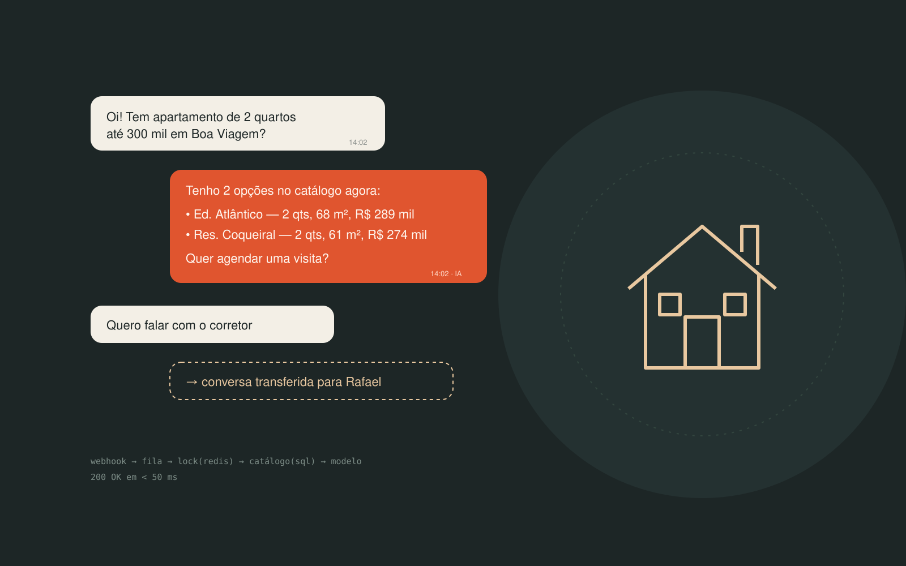

Imoboo CRM
O corretor vende sem passar o dia preso ao WhatsApp. A IA responde as perguntas repetitivas sobre o catálogo; o corretor entra quando o atendimento exige gente. Real-estate agents sell without spending the day stuck on WhatsApp. The AI answers the repetitive questions about listings; the agent steps in when the conversation needs a person.

A regraThe rule
A IA não é fonte de verdade.
The AI is not a source of truth.
Preço, endereço, área, quartos e disponibilidade entram no prompt vindos do banco, dentro de um bloco <catalogo>. O system prompt proíbe estimar e manda encaminhar ao corretor quando o dado não existe. Se o catálogo volta vazio, a IA diz que vai confirmar — nunca inventa um imóvel.
Price, address, area, bedrooms and availability reach the prompt from the database, inside a <catalogo> block. The system prompt forbids guessing and hands off to the agent when data is missing. If the catalogue comes back empty, the AI says it will check — it never makes up a listing.
E só usa IA quem precisa. “Imóveis abaixo de 300 mil com 2 quartos” é WHERE, não prompt. O modelo entra depois, para transformar a lista em conversa.
And only what needs AI uses AI. “Listings under 300k with 2 bedrooms” is a WHERE clause, not a prompt. The model comes in afterwards, to turn the list into conversation.
O caminho de uma mensagemThe path of a message
O webhook responde 200 em menos de 50 ms e joga o trabalho para um worker fora do ciclo HTTP. Cada passo antes da IA existe para não chamar a IA. Escolha uma mensagem e veja até onde ela vai:
The webhook returns 200 in under 50 ms and hands the work to a worker outside the HTTP cycle. Every step before the AI exists to avoid calling the AI. Pick a message and see how far it goes:
Onde o custo é contidoWhere cost is contained
Busca em SQL antes do promptSQL search before the prompt
Só os imóveis relevantes viajam no contexto — no máximo cinco.
Only relevant listings travel in the context — five at most.
Dois tiers de modeloTwo model tiers
Extração e classificação vão num modelo rápido e barato; só a resposta final usa o modelo balanceado.
Extraction and classification go to a fast, cheap model; only the final reply uses the balanced one.
Cache em camadasLayered caching
Extração com cache de 7 dias (“2 quartos até 300 mil” é extraído uma vez por tenant), catálogo de 5 minutos, resposta de 6 horas. Mesma pergunta com o mesmo catálogo dá a mesma resposta.
7-day cache on extraction (“2 beds under 300k” is extracted once per tenant), 5 minutes on the catalogue, 6 hours on replies. Same question with the same catalogue gets the same answer.
Histórico curtoShort history
Janela de 8 mensagens mais um resumo: conversa longa não é reenviada a cada turno.
An 8-message window plus a summary: long conversations aren't resent on every turn.
Teto por tenant e retry limitadoPer-tenant cap and bounded retry
MonthlyAiMessageLimitcorta antes da fatura, e falha de IA tenta de novo uma vez só.AiUsageLogsguarda operação, modelo, tokens e se veio do cache — sem prompt e sem conteúdo do lead.MonthlyAiMessageLimitstops usage before the bill does, and a failed AI call retries only once.AiUsageLogsrecords operation, model, tokens and cache hits — no prompts, no lead content.
Multi-tenant e segurançaMulti-tenancy and security
Isolamento é do backend. Global query filters no DbContext aplicam o WHERE TenantId sozinhos e o SaveChanges bloqueia gravação cruzada. O TenantId vem da claim do JWT — nunca de body, query ou header. No Redis, toda chave começa com tenant:{id}:.
Isolation belongs to the backend. Global query filters on the DbContext apply WHERE TenantId automatically and SaveChanges blocks cross-tenant writes. TenantId comes from the JWT claim — never from body, query or header. In Redis, every key starts with tenant:{id}:.
Webhook idempotente. Índice único em (Provider, ExternalEventId) e outro em (TenantId, ExternalMessageId): mensagem reentregue é descartada no insert.
Idempotent webhook. A unique index on (Provider, ExternalEventId) and another on (TenantId, ExternalMessageId): redelivered messages are dropped at insert time.
O resto do básico bem feito: senha em PBKDF2-HMAC-SHA256 com 210 mil iterações e comparação em tempo constante, segredos só por variável de ambiente, telefone mascarado nos logs, container da API rodando sem root.
The rest of the basics, done properly: PBKDF2-HMAC-SHA256 passwords with 210k iterations and constant-time comparison, secrets only via environment variables, phone numbers masked in logs, API container running as non-root.
A automação é reversível. Assumir a conversa, devolver para a IA e encerrar são ações explícitas na interface; responder manualmente já assume.
Automation is reversible. Taking over, handing back to the AI and closing are explicit actions in the UI; replying manually takes over automatically.
O que ainda faltaWhat's still missing
Escrevo isso para deixar claro o limite do que está entregue:
Written down to be clear about where the delivered work ends:
- Testes automatizadosAutomated tests
- Caixa de entrada em tempo real — hoje ela consulta a API a cada 20 segundosReal-time inbox — today it polls the API every 20 seconds